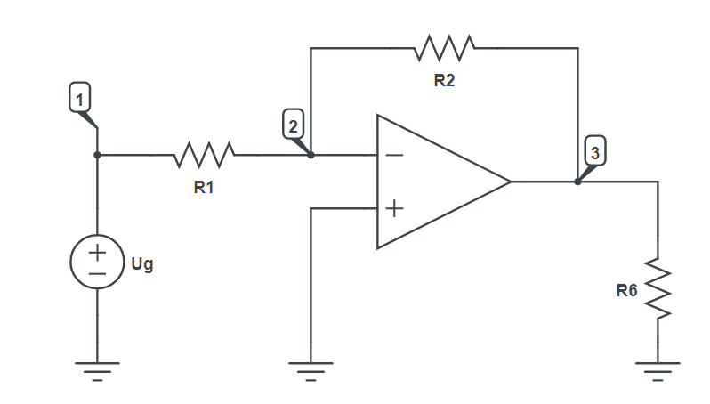

MNA Equations
Circuit description
An inverting amplifier (also known as an inverting operational amplifier or an inverting op-amp) is a type of operational amplifier circuit which produces an output which is out of phase with respect to its input by 180 degrees.

Goals
- Get the MNA quations and variables
- Calculate the aplification gain of OpAmp as $\frac{U}{Ug}$
- Calculate the power of OpAmp as $I_OpAmp*U$
- Calculate the power of
R6
Modeling the circuit
First we include Symbolics.jl and CircuitS.
using Symbolics
include("../CircuitS.jl")Unfortunately, due to a simplifying issue inside the JuliaSymbolics library, we cannot solve the given circuit with simplify=true parameter for simulate function (the parameter is set to true by default).
As an alternative, we will use conductance G to describe resistors instead of resistance R. This can be achieved by using admitance elements instead of resistors. This helps the problem as it makes MNA equations less complex.
If we chose to pass simplify=false to the solve function, results will end up being unreadable.
We create the circuit and add all of the elements as shown in the picture above, but replace the resistance with conductance:
circuit = create_circuit()
add_element([Admitance, "G1", 1, 2], circuit)
add_element([Admitance, "G2", 2, 3], circuit)
add_element([Admitance, "G6", 3, 0], circuit)
add_element([Voltage, "Ug", 1, 0], circuit)
add_element([OpAmp, "OpAmp", [0, 2], 3], circuit)Simulation
After we've built everything, we initialise and simulate the circuit:
init_circuit(circuit)
result = simulate(circuit)
println(result)Dict{Any, Any} with 5 entries:
"V3" => (-G1*Ug) / G2
"V2" => 0
"I_Ug" => -G1*Ug
"I_OpAmp" => (-G1*Ug*(G2 + G6)) / (-G2)
"V1" => UgTo get the full list of MNA equations and variables (node potentials and some currents) we can use get_equations and get_variables functions:
equations = get_equations(circuit)
println(equations)
variables = get_variables(circuit)
println(variables)5-element Vector{Num}:
I_Ug + G1*V1 - G1*V2
V2*(G1 + G2) - G1*V1 - G2*V3
I_OpAmp + V3*(G2 + G6) - G2*V2
V1 - Ug
-V2
5-element Vector{Num}:
V1
V2
V3
I_Ug
I_OpAmpEquations are implicitly equal to 0
Unfortuantely, as discussed before we cannot print them in latex inside the console window.
For the amplification gain, we can simply divide the voltage V3 by Ug, but we first need to define Ug as a symbol, so we can do calculations with it:
@variables Ug
A = result["V3"]/Ug
println(A)(-G1) / G2Amplification gain is negative, so we know its an inverting Op Amp.
We can calculate the power of OpAmp as $V3*I_OpAmp$
P1 = result["V3"]*result["I_OpAmp"]
println(P1)((G1^2)*(G2 + G6)*(Ug^2)) / (-(G2^2))And for R3 as $\frac{V3^2}{R6}$
@variables R6
P2 = (result["V3"]^2)/R6
println(P2)(((-G1*Ug) / G2)^2) / R6